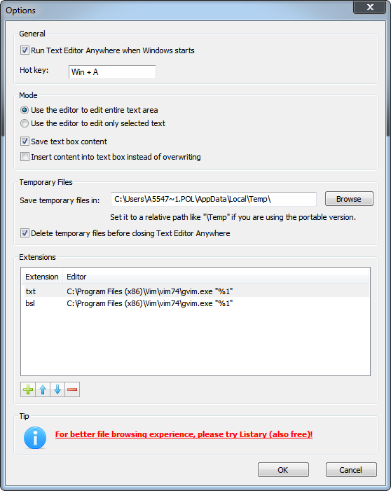

Text Editor Anywhere allows you to edit text anywhere with your favorite text editor. It provides a means of taking advantages of some advanced features (like auto-completing, spell checking and syntax highlighting) that are only available in an external text editor. It may also save you from web browser crashes.
For example, you can use Vim to tweet or reply a post in Chrome with the help of Text Editor Anywhere.
Support all kinds of text editors
Support all applications
Support Unicode
You can pass complex parameters to the editor.
Настройка vim для txt:
